L'histoireCocolint a disparu… pas tout à fait
Le Poisson-Rêve s'est réveillé et l'île Cocolint a disparu… mais pas tout à fait. Marine a fait un vœu : avoir des ailes pour partir au-delà de la mer. Elle revient en mouette, et elle accompagne Link dans un archipel où plus personne ne rêve.
Gulls of Life : gulls (les mouettes) sonne comme goals (les buts). C'est la morale du jeu : on réalise ses rêves, on n'y reste pas, et on avance malgré les obstacles.
Marine voyage au chaud dans la tunique de Link et en sort pour parler : un appui court sur Select, et elle a toujours quelque chose à dire sur l'endroit où l'on est.


Chapitre 1La plage du réveil
Link est évanoui sur le sable. Une mouette arrive en volant, se pose à côté de lui… et parle.


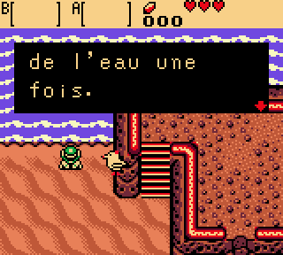
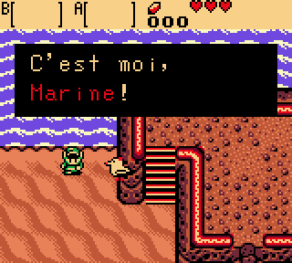
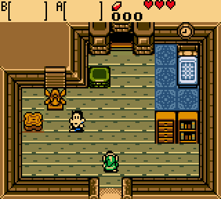
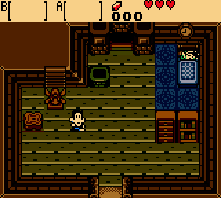
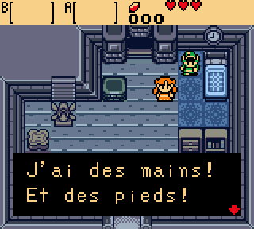

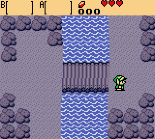
Le SongeDormir pour voir ce qui manque
À l'auberge de Port-Veille, on pousse le lit : Link s'endort et se réveille dans le Songe. L'île devient bleutée, l'écran ondule comme sous l'eau… et là, Marine redevient humaine.
Première énigme : le pont cassé du sentier des falaises est entier dans le Songe. On le traverse en rêve, et on se réveille de l'autre côté.
Le premier donjonLe Phare Éteint
Le vieux pêcheur rend à Link son épée, repêchée après le naufrage. Au cap, le phare s'est éteint : deux étages, une petite clé, la clé du boss, un trésor tout neuf… et, tout en haut, le Veilleur Creux.
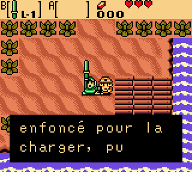
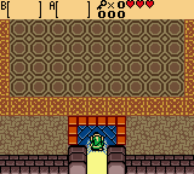
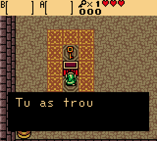
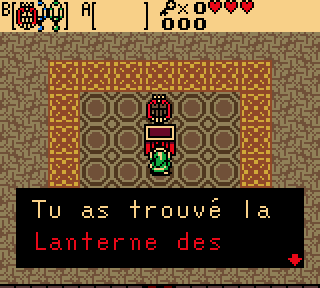
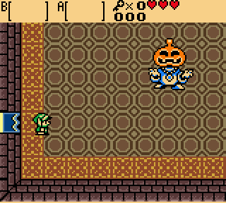
Le trésor du donjonLa Lanterne des Songes
Plus besoin d'un lit : dehors, Link joue un air sur la Lanterne et passe du Réel au Songe sur place, puis revient.
Attention à l'arrivée : si la case de l'autre côté est dans l'eau, Link est renvoyé.
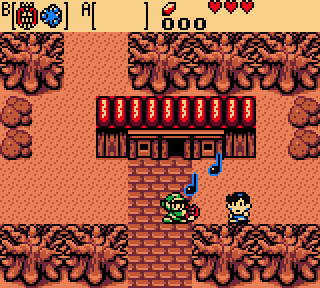
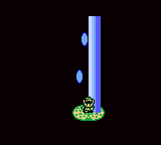
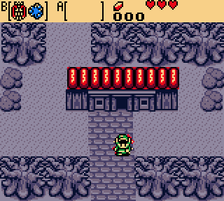
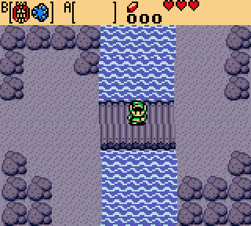
Fin de la démoÀ suivre…
Le boss vaincu : un réceptacle de cœur, le premier couplet d'une chanson, puis quelques mots de Marine sur le cap… et l'aventure continue.
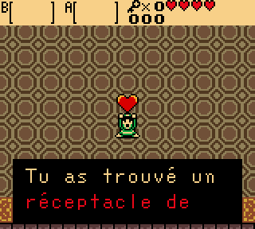
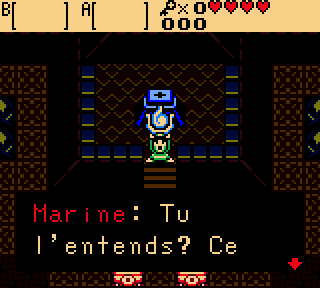
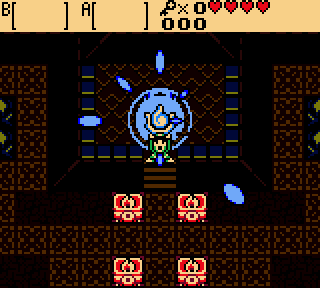
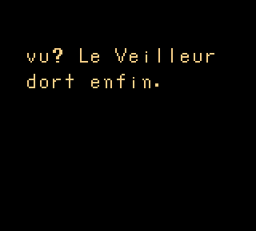
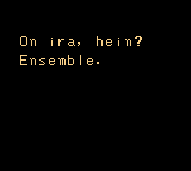
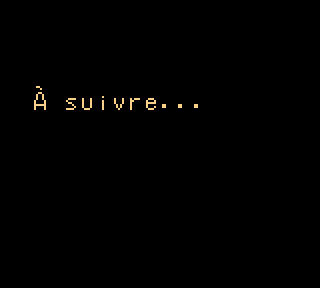
Démo v0.1Jouer à la démo
Le chapitre 1 et le Phare Éteint, du film d'ouverture jusqu'à « À suivre… ». La démo est un patch BPS : aucune ROM n'est fournie, on l'applique sur la ROM de sa propre cartouche.
- Télécharger
gulls_of_life.bpsdans la version v0.1. - Avoir sa propre ROM The Legend of Zelda: Oracle of Ages, version USA (CRC32
3800a387). - Appliquer le patch avec un outil BPS, par exemple Rom Patcher JS en ligne.
- Jouer le fichier obtenu dans n'importe quel émulateur Game Boy Color.
Le mondeL'archipel des Sans-Sommeil
Huit îles reliées par le Bateau-Rondin. L'aventure commence sur l'île de la Brume : seize écrans, de la plage du réveil au cap du Phare.

Journal de quêteOù on en est
Un cœur plein par partie terminée. Les vides sont encore à venir.
- Nouvelle partie : Link se réveille sur une plage
- Marine en mouette, avec sa fleur d'hibiscus
- Chapitre 1 : la rencontre sur la plage, avec un choix de réponse
- Film d'ouverture avant l'écran titre
- Parler à Marine avec Select ; Select maintenu ouvre la carte
- L'île de la Brume : 16 écrans
- Les habitants de Port-Veille et leurs dialogues
- L'auberge et le Songe, Marine humaine
- Première énigme : le pont du rêve
- Le vieux pêcheur rend son épée à Link
- Le Phare Éteint et son boss, le Veilleur Creux
- Après le boss : le réceptacle de cœur, le premier couplet, Marine sur le cap et « À suivre… »
- La Lanterne des Songes : un air, et Link passe du Réel au Songe
- Démo jouable v0.1 (patch BPS)
- L'écran titre Gulls of Life
- Les répliques et indices de Marine pour chaque lieu
- Les jeux du forain : Creuse-Rubis et Mamono
- Musiques : la chanson de Marine
Les coulissesComment c'est fait
Le jeu tourne sur le moteur d'Oracle of Ages, grâce au désassemblage complet oracles-disasm de Stewmath. Le passage présent/passé d'Ages sert au Réel et au Songe. Tout le reste est nouveau : histoire, îles, salles, film, sprites et dialogues.
Aucune ROM n'est distribuée ici : le jeu est un patch à appliquer sur sa propre ROM Oracle of Ages (USA).
| Dialogues | écrits en français normal dans story/textes.yaml, largeur des lignes vérifiée (16 caractères) |
| Sprites | dessinés en texte dans art/, convertis par un script |
| Salles | plans texte dans story/salles/ (10 × 8 briques par écran) |
| Film | ciel, nuages, soleil, mer et rondin fabriqués par tools/make_film.py |
| Carte | dessinée par tools/make_map.py |
| Tests | la ROM jouée dans PyBoy, avec captures |
./setup.sh ./build.sh # → out/gulls_of_life.gbc